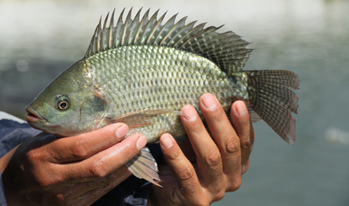

Conociendo el cultivo sostenible de organismos acuaticos
La acuacultura es la actividad dedicada al cultivo de organismos acuáticos como peces, crustáceos, moluscos y algas bajo condiciones controladas.
Es un tipo de acuacultura que se ocupa en el crecimiento de peces en recintos acuáticos controladas, como estanques, lagos, embalses o corralesde red en el mar.Pueden ser sistemas totalmente cerradas denominados"sistemas integrados de reciclado";sistemas semi-cerrados, denominados"sistemas dinámicos/de pista"; o sistemas abiertos, denominados"sistemas de jaulas". Las especies más comunes en la psicultura es la carpa, la tilapia de nilo,tilapia del Nilo, el pangasius (basa), la trucha arco iris, y en ambientes marinos, el salmón atlántico, la dorada y la lubina.

La acuicultura de tilapia es a menudo desarrollada en sistemas extensivos o en sistemas controlados, los cuales presentan una diversidad de problemáticas; razón por lo que es necesario determinar las causas a estos problemas y ofrecer soluciones orientadas al desarrollo sostenible de la actividad. Los principales problemas en la mayoría de los cultivos son el reducido crecimiento y mortalidades elevadas, esto asociado al inadecuado manejo del cultivo. Existen avances importantes en las técnicas de producción de tilapia, pero son pocas las granjas que aplican tendencias amigables con el ecosistema, como ejemplo se tiene el uso de los sistemas de recirculación (RAS por sus siglas en inglés), que son una tecnología de cultivo intensivo utilizado para disminuir el gasto del recurso hídrico, ya que se reutiliza el 95% de agua a través de varios componentes, al igual que la acuaponía (cultivos integrados entre peces y plantas) y los bioflocs (creación de un microcosmos entre peces y bacterias heterotróficas, agregados de microalgas, protozoos y materia orgánica en suspensión), las cuales son técnicas de cultivo en RAS Las causas de mortalidad y los problemas asociados al cultivo de tilapia se deben corroborar con necropsias a los cadáveres y disecciones a organismos vivos, registrar la signología y la mortalidad acumulada al igual que realizar la toma de muestras de diversos órganos para su análisis patológico; además, determinar la calidad química biológica de agua para descartar la presencia de metales pesados y bacterias patógenas antes de iniciar el proyecto y evitar riesgos para los peces y/o consumidores finales.

El cultivo de camarón, se ha convertido en una alternativa para los pescadores tradicionales, quienes han apostado por la capacitación, tecnificación, centros de acopio, laboratorios y otras herramientas. El camarón es un recurso que se captura en altamar en su forma silvestre con métodos de pesca sustentable, pero también es un producto que se puede cultivar por medio de granjas camaronícolas, del mismo modo, el manejo productivo de las áreas y lagunas costeras con fines de pesca y acuacultura, y el uso de zonas aledañas a las mismas para el desarrollo de actividades de producción acuícola, sigue ganando creciente interés a nivel mundial, debido esencialmente a la calidad y al alto valor de los productos obtenidos Existen factores que son universalmente importantes para todos los tipos de sistemas acuícolas de camarón, tales como: disponibilidad y calidad del agua, clima e infraestructura (caminos, electricidad, localidades, etc.); otros factores tales como topografía, tipos de suelo y costos de adquisición de los terrenos, son específicos de sistemas semi-intensivos La selección e importancia de los distintos factores es variable, ya que ésta difiere no sólo del tipo de unidad de producción, sistema de cultivo, etc., sino también de acuerdo con las condiciones de cada productor, investigador o tomador de decisión. De la misma forma, las escalas espaciales también influyen en la selección de factores, ya que por ejemplo, en una superficie de 10 x 10 km, las consideraciones relativas al relieve, la batimetría y los suelos pueden ser factores específicos muy pertinentes, mientras que en esa misma superficie las tasas de evaporación y las distancias hasta los mercados principales, sólo tienen una trascendencia secundaria.

El cultivo de salmón es la práctica de criar salmones en entornos manejados cuidadosamente, ya sea en jaulas marinas localizadas en zonas costeras o en sistemas de tanques terrestres. Los acuicultores supervisan a los peces desde la etapa de huevo hasta la cosecha, a lo largo de un periodo de aproximadamente dos a tres años, gestionando las condiciones que favorecen su crecimiento, salud y bienestar. Los salmones se crían en entornos cuidadosamente controlados que replican su ciclo de vida natural. Comienzan su vida en criaderos de agua dulce, donde los huevos eclosionan y los peces jóvenes se crían durante aproximadamente un año antes de ser trasladados a granjas marinas: grandes corrales flotantes ubicados en aguas costeras frías y limpias. En estos corrales, los salmones reciben una dieta nutritiva, y los acuicultores supervisan la salud de los peces, la calidad del agua y la alimentación mediante tecnologías avanzadas y sistemas cada vez más basados en inteligencia artificial. Algunos productores prolongan la etapa de agua dulce en sistemas terrestres para reducir el riesgo de enfermedades. Tras un periodo de entre 18 y 24 meses, los salmones son cosechados y procesados localmente, lo que asegura una fuente de proteínas constante, sostenible y de alta calidad. Una vez que los salmones alcanzan el tamaño apto para la cosecha, son transportados a instalaciones de procesamiento donde se preparan para su comercialización (generalmente en forma de filetes frescos, aunque también son habituales los ejemplares enteros y otros productos derivados). En la actualidad, el cultivo de salmón constituye un sector altamente regulado, sujeto a estrictas normativas destinadas a garantizar la sostenibilidad medioambiental, el bienestar de los peces y la seguridad alimentaria, al tiempo que satisface la creciente demanda mundial de productos del mar saludables y ricos en proteínas.